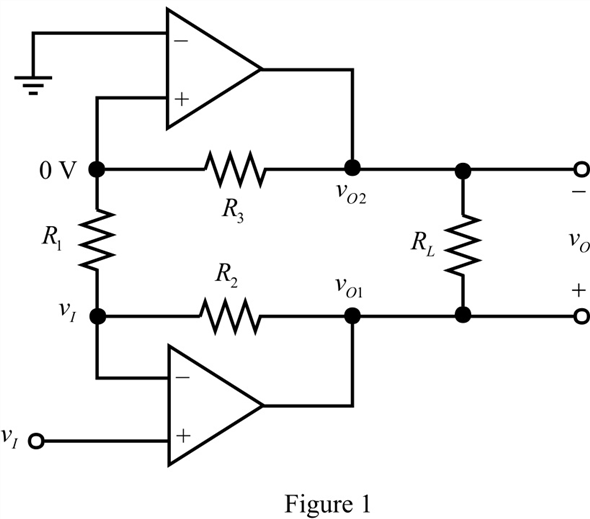

Apply nodal analysis to the  node.
node.
Apply nodal analysis to the node,  .
.
Refer to Figure P11.54 in the textbook.
Draw the circuit diagram with notations and by using virtual ground concept.

Apply nodal analysis to the node.
Apply nodal analysis to the node, .
Calculate the expression for the output voltage,  .
.
Substitute for  and for
and for  .
.
The gain of the circuit is,

Thus, the expression for the gain of the circuit, is .
The largest sine wave output is obtained when the voltage at the output of one of op-amp is +13 V and that at the output of the other op-amp is resolving in a 26-V peak output.
Thus, the largest sine wave across the resistor,  provides .
provides .
Consider the smallest resistor in the circuit is  , .
, .
Consider the expression for gain of the circuit.
Substitute  for
for  and
and  for .
for .
Substitute for  and for .
and for .
Substitute  for
for  and
and  for
for  .
.
Thus, the value of the resistance,  is
is  .
.
Calculate the value of the resistor,  .
.

Substitute  for
for  .
.
Thus, the value of the resistance,  is .
is .